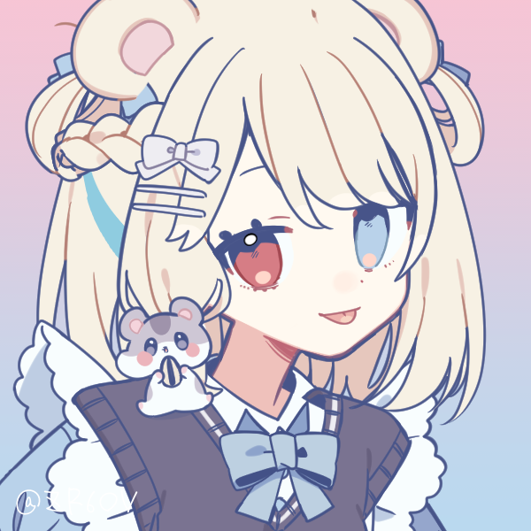
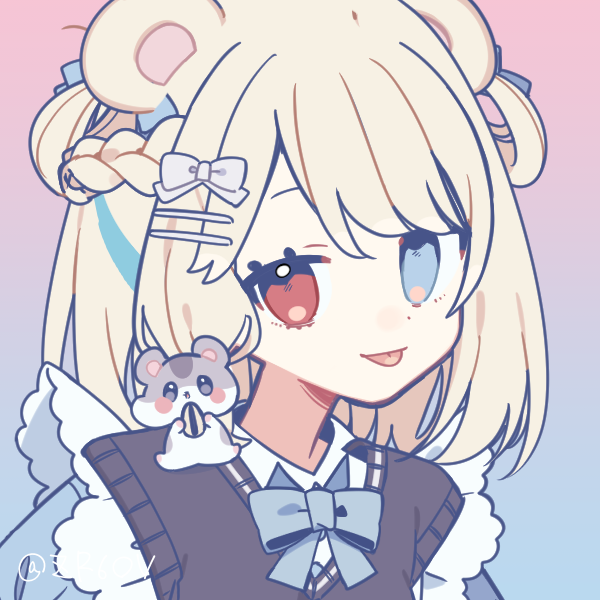

yumin
| 名前 | yumin |
| ネット名 | 雪村眠十 |
| 読み方 | ゆーみん,ゆきむらみんと...など |
| 誕生日 | 01月09日 |
| 使っているプログラミング言語 | HTML,CSS,Python,JavaScript(勉強中) |
| 趣味 | ホロライブの動画やYouTubeを見ること,プログラミング,パソコン関係 |
| 種族 | 猫とうさぎと人間の雑種（っていう設定） |
リンク
X(Twitter) Instagram DiscordServer Github YouTube
経歴
yumin地震観測所(yuminQuakelive) の設立者兼所長です！
yumin地震観測所公式サイトオリキャラ

 
